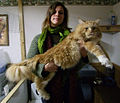
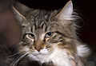

Зміст
- Історія
- Розмноження
- Характер
- Зовнішній вигляд
- Забарвлення
- Світлини
- Примітки
- Джерела
Історія
Мейн-кун витривала й невибаглива порода, за що й стали улюбленицями моряків. Походження їх невідоме. Імовірно, вони з'явилися від схрещування місцевих короткошерстих і завезених торговцями з Малої Азії довгошерстих кішок. Свою назву одержали завдяки місцю походження, а також, можливо, завдяки звичкам і зовнішній подібності з єнотом. Багато кішок цієї породи було представлено на першій виставці в Нью-Йорку в 1860 році. У 1953 році був утворений Клуб любителів мейнських єнотових кішок, що займався популяризацією і організацією виставок цієї породи. Стандарт породи більшістю клубів та об'єднань визнаний у 1983 році. Сьогодні мейнські кішки добре відомі й розводяться в багатьох країнах.
Розмноження
Зазвичай народжують кошенят раз на рік. У потомстві спостерігається велика розмаїтість забарвлення. Кошенята народжуються великими, міцними. Розвиваються протягом тривалого часу. Формування дорослої особи займає до чотирьох років.
Характер
Мейн куни — це міцні, великі тварини, витривалі й активні. Легко адаптуються до різноманітних умов навколишнього середовища. Остьове волосся має водовідштовхувальні властивості. Однаково добре пристосовані до життя як у приміщенні, так і на вулиці. Кішки мають тихий, приємний, мелодійний голос. За характером дружні, грайливі, спокійні, схожі на перських кішок.
Зовнішній вигляд
Мейнська єнотова — кішка середнього, а часом і великого розміру, міцної будови. Протягом тривалого часу мейнська єнотова кішка вважалася найбільшою кішкою[1], однак величина її наближається до розмірів персів. Маса самців — 6-9 кг (іноді і більше), кішок — 4-7 кг. Справляє враження сильної, кремезної кішки. Кішки значно дрібніші, ніж коти. Тіло довге, мускулясте, прямокутного формату, із широкою грудною кліткою. Спина рівна, пряма. Ноги сильні, мускулясті, широко розставлені, досить довгі, пропорційні щодо тіла. Лапи великі, круглі, з пасмами волосся між пальцями (до 5 см). Хвіст довгий (дорівнює довжині тіла), широкий біля основи, звужений до кінця, без зламів. Вкритий довгою шерстю (у вигляді страусового пера). У піднятому стані не пухнастий. Кінець хвоста тупий. Голова середньої довжини й середньої ширини із квадратною мордочкою, невелика стосовно тулуба. У кішок старшого віку допускається ширша морда. Вилиці високі. Підборіддя сильне, не повинне виступати (знаходиться на одній вертикальній лінії з кінчиком носа). Надає голові квадратної форми. Ніс короткий, із плавним переходом від чола до морди, з невеликою сіделкою. Вуха великі, широкі біля основи, звужені й загострені, зі щетинками («китицями») на кінцях, високо й трохи навскіс посаджені, широко розставлені. Відстань від кінчиків вух до кінчика носа така ж, як від кінчика носа до його основи. Очі великі, круглі, виразні, широко розставлені, трохи косо посаджені, але не так, як у східних кішок. Колір очей може бути різним. Шия міцна, середньої довжини. У котів більш мускуляста, через що здається коротшою, ніж у кішок. Шерсть густа, кошлата, важка, гладка, блискуча. Коротша й густіша на голові, плечах і довша на животі й задніх кінцівках, де утворює довге пухнасте галіфе. За довжиною шерсті на голові мейнкуни займають проміжне положення між кішками перської та сіамської породи. Можна сказати, що ця порода майже короткошерста спереду й довгошерста ззаду. Комір на шиї бажаний, але не обов'язковий. Підшерстя ніжне, м'яке, легке. Текстура шерсті шовковиста, м'яка, спадаюча. Довжина шерсті змінюється залежно від пори року й клімату. У країнах з теплим кліматом шерсть стає коротшою.
Забарвлення
Допускаються всі різновиди забарвлення, а також їхні поєднання (з білим,та інші), крім колорпоінт. За забарвленням породу поділяють на два класи: з агуті-фактором і без агуті-фактора. Кішки в поєднанні з білим, який займає одну третю тіла, повинні мати повністю білі кінцівки, живіт, груди, шию та мітки на мордочці. Колір очей зелений, жовто-зелений, золотавий (жовтий), кольору міді, помаранчевий насичений, не залежить від забарвлення. Кішки з білим забарвленням можуть мати блакитний колір очей або різнобарвні очі.
Світлини
Кошеня у віці 75 днів
8-річна кішка у профіль
Двоє кошенят
10-кілограмовий кіт
Дорослий кіт на снігу
таббі
Примітки
- Найбільший домашній кіт став інтернет-зіркою | Ruslo.info. Ruslo.info (uk-UA). 17 травня 2017. Архів оригіналу за 29 червня 2017. Процитовано 21 червня 2017
Джерела
Заведия Т. Л. Сучасна енциклопедія любителя кішок: 1500 корисних порад фахівців. — Донецьк : БАО, 2004. — ISBN 966-548-910-0.